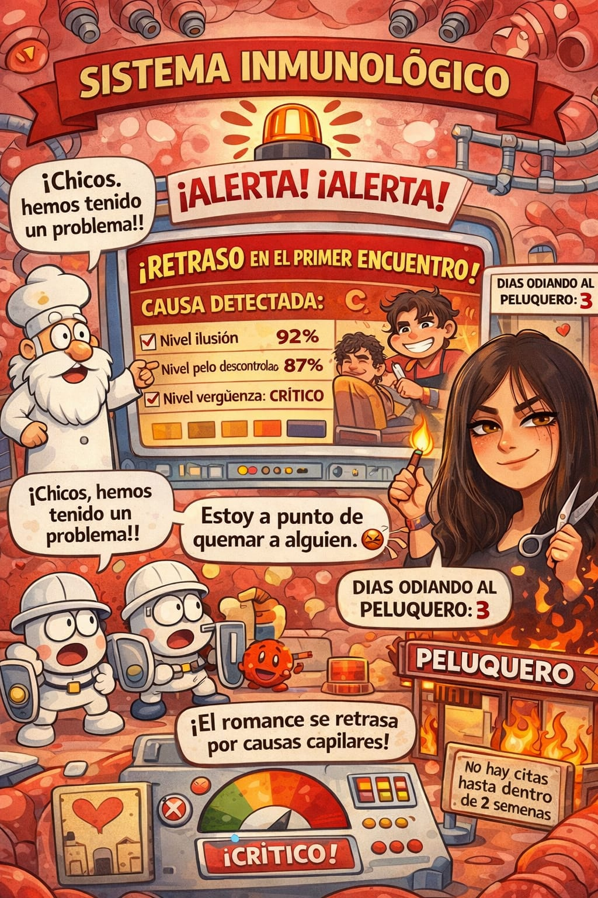
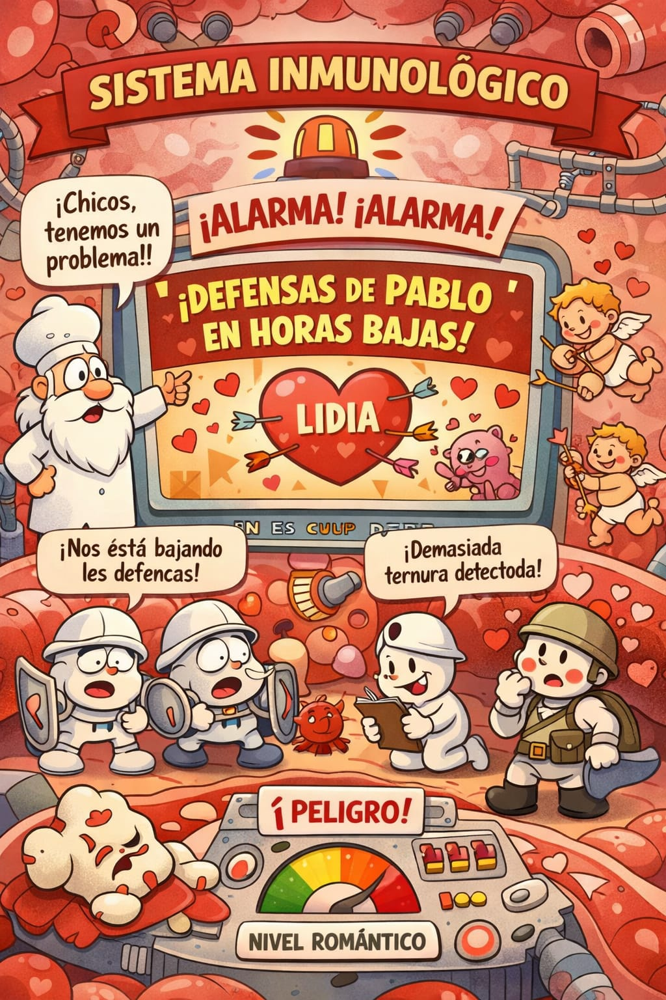

otra manera de contar la historia


¿qué raro todo no?
Todo empezó con una broma ridícula. Un mensaje que podría haber sido ignorado, uno de esos que uno manda sin demasiadas expectativas, con la ceja levantada y una sonrisa medio guardada. Algo sobre poner una reclamación. Algo absurdo.
Nadie esperaba que al otro lado hubiera alguien que la recogiera con la misma ironía, que devolviera el juego con la pelota en el mismo punto exacto en el que fue lanzada. Pero ahí estaba. Y ahí empezó todo.
Hay conversaciones que no tienen intención de convertirse en nada, y sin embargo se quedan. Se enredan entre los dedos sin pedir permiso.
Primero fueron palabras. Luego voces. Llamadas que empezaron a deshoras y terminaron con el silencio lento de quien se ha quedado dormido al otro lado del teléfono, con la respiración acompasada y la pantalla todavía encendida.
Las bromas se volvieron costumbre. Las costumbres, refugio. Y poco a poco, casi sin que ninguno de los dos lo decidiera, las defensas que cada uno había levantado con tanto cuidado fueron cediendo, primero en los bordes, luego en el centro.
Una sonrisa a través de una pantalla tiene algo de milagro pequeño. Una mirada que llega desde lejos y aun así llega entera, sin perder nada por el camino.
Esto no estaba en ningún plan. Y quizás por eso se siente tan real. Lo que empezó como la historia más rara jamás contada lleva trazas de convertirse en la más bonita. Al menos eso es lo que sugieren los segundos que se suman sin prisa.